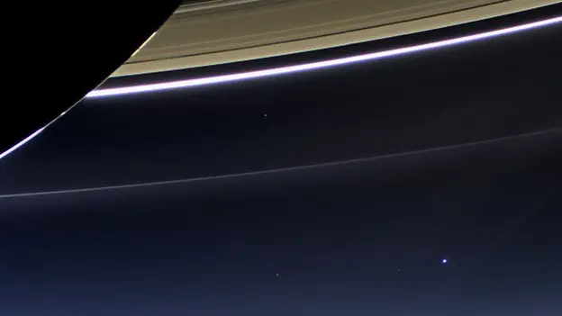

El sistema solar es un conjunto de cuerpos celestes que orbitan alrededor del Sol, incluyendo planetas, satélites, asteroides, cometas y polvo cósmico. Es un tema fascinante que nos permite explorar el universo y comprender mejor nuestro lugar en él.

Esta es la vista desde el planeta Júpiter, donde se puede observar en la esquina inferior derecha un punto azul. Ese punto es la Tierra, que es unas 11 veces más pequeña que Júpiter.
Si te sientes diminuto frente a Júpiter, espera a ver lo que sigue. El Sol es tan grande que dentro de él caben más de un millón de Tierras. Y aun así, el Sol es solo una de entre cientos de miles de millones de estrellas de nuestra galaxia, la Vía Láctea.
Más allá de ella existen cientos de miles de millones de galaxias más. Todo lo que conoces, cada persona, cada ciudad y cada océano, ocurre en un punto de luz azul que, visto desde lejos, casi desaparece.
En 1990, la sonda Voyager 1 fotografió la Tierra desde más allá de Neptuno, a unos 6.000 millones de kilómetros. En la imagen, nuestro planeta ocupa menos de un píxel, suspendido en un rayo de luz. Se conoce como "el punto azul pálido".
Pero hay otra forma de verlo: ese diminuto punto es, hasta donde sabemos, el único lugar del universo donde existe la vida, y donde una especie logró construir una sonda, enviarla hasta el borde del Sistema Solar y mirar hacia atrás. Somos pequeños, pero somos el universo tratando de entenderse a sí mismo.